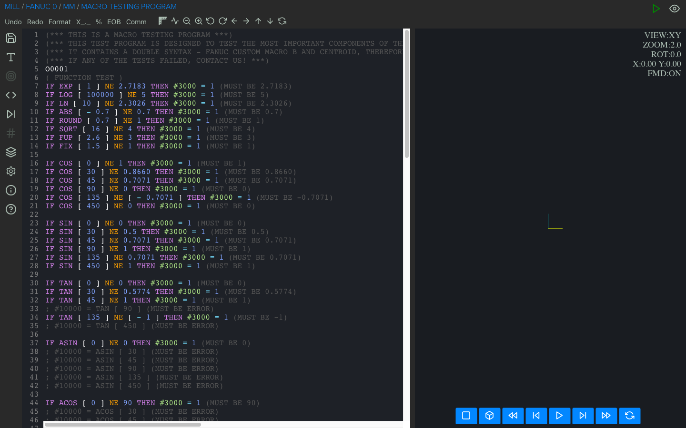
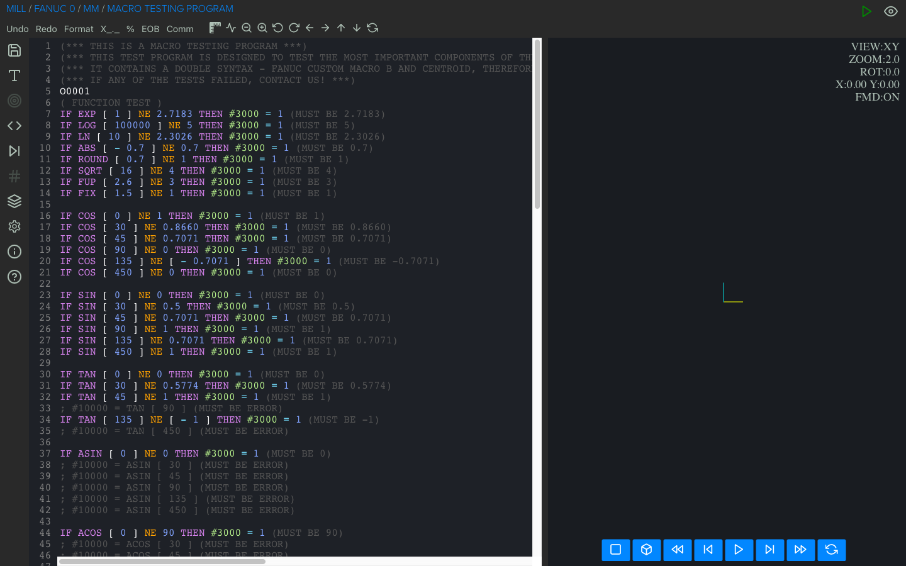

CNC Macro Simulator II SD - (3 axis mill)


 



This basic version is completely sufficient to start your adventure with cnc macro programming in both the Fanuc Custom Macro B and Centroid standards. Just like the more advanced versions, it has a macro debugger which is considered by specialists all over the world as one of the best and practical tools that every CNC programmer should have.
Also remember that with this software you can convert macros to pure G code, which is very useful if your machines do not support parametric programming.
Viewport (simulator/graphics) information:
- 3D tool path
- measuring an object / coordinates
- simulation (play, play fast, stop, next, reset, previous, rewind)
- 5 view modes (3D, XY, XY removal, XZ, YZ)
- lathe - 2 view modes (radial and axial removal view)
- image rotation in x axis (mill)
- zoom
- shift image
- show / hide rapid movement
- simplified representation of tools (mill - max 100 tools, lathe - max 32 tools)
- metric / imperial mode
- 3 themes (dark, bright, black & white)
G-code/Fanuc/Haas/Mazak ISO support:
- absolute, incremental and polar mode
- G98 retract to initial Z value
- G99 retract to R value
- M98 subprogram (multiple formats)
- repeat canned cycle (L and K)
- circular interpolation supported by using (I, J, K or R)
Fanuc/Haas support:
- G16 polar coordinate
- G51 scaling
- G52 local work shift
- G68 coordinate system rotation
Haas support:
- G70 Bolt Hole Circle
- G71 Bolt Hole Arc
- G72 Bolt Holes Along an Angle
Macro (Fanuc Custom Macro B/Haas/Centroid) support:
- improved and faster macro interpreter (XME 1.4.0) for advanced macro programs
- keywords: IF, THEN, GOTO, WHILE, DO, END, ELSE
- special internal instruction - EXIT (to immediately end the program when this instruction is called)
- Fanuc Custom Macro B comparison operators: EQ, LT, LE, GT, GE, NE
- Centroid comparison operators:
==, <, <=, >, >=, != - G65 macro subprogram call
- math functions supported: sin, cos, tan, asin, acos, atan, sqrt, abs, round, fix, fup, ln, exp, pow
- local, common variables and some of the most popular system variables
Debugger:
- assigned and created variables
- called subroutine and nesting level
- math and logical calculations in line
- for IF and WHILE statement shows the actual value (true or false)
Code editor:
- code highlighting
- formatting
- commenting and uncommenting a piece of code
- code indentation
- undo / redo
- adding / removing EOB
- adding / removing %
- adding decimal point
Program export:
- code compressing
- removing empty lines
- adding decimal point
- adding automatically information about the tool used (at the beginning of the program as before calling it)
- adding line number
- removing original line number
- adding safety line
Files:
- new project
- open file
- append (to add a local subroutine)
- save
- save as
- export (from macro program to a pure g code)
- file extension supported:nc, cn, ncc, cnc, eia, txt, min, mpf
Input compatibility:
Fanuc 0, Fanuc 6, Fanuc 10, Fanuc 11, Fanuc 12, Fanuc 15, Fanuc 16, Fanuc 18, Fanuc 20, Fanuc 21,
Fanuc 30i,
Fanuc 31i, Fanuc 32i, Fanuc 35i, Haas, Centroid, Mazak ISO, Siemens 802D and others using CNC macros based on
Fanuc
Custom Macro B.
Output compatibility:
Same as input control selected, it also can be converted to Heidenhain, Sinumerik or other control upon
special request.
Languages:
English
{{ price-container }}